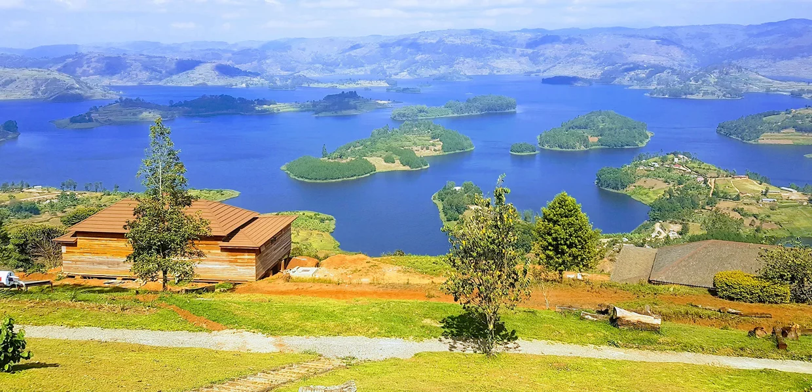

Lake Bunyonyi has a way of slowing people down almost immediately. After long drives, forest treks, or tightly packed itineraries,
the first sight of the lake's layered hills and scattered islands feels like an exhale. The water is calm enough to reflect whole
moods rather than just scenery.
Mornings are often the most beautiful. Mist hangs low over the islands, canoe paddles move with almost no sound, and the hills
reveal themselves gradually as the light strengthens. It is not dramatic in the way a waterfall or safari sighting is dramatic.
It is gentler, more restorative, and often exactly what a traveler did not realize they needed.
That is why Bunyonyi works so well in a Uganda itinerary. It gives the journey breathing room without feeling like dead time.
The lake itself is the experience.
Beauty Here Comes In Layers

Bunyonyi is often called one of Africa's most beautiful lakes because its landscape keeps revealing new lines. Islands overlap.
Slopes fold into one another. Light changes the color of the water from silver to blue to a darker, moodier tone by late day.
Nothing about it feels flat.
The lake is also lovely because it does not overwhelm. It invites attention instead of demanding it. You notice the shape of the
shoreline, the sound of evening birds, the movement of a canoe between islands. Its beauty gathers slowly.
What To Do When Doing Less Is The Point
Travelers often enjoy Bunyonyi most when they stop trying to optimize every hour. Take a boat ride. Visit an island. Read on a
terrace. Watch local movement on the water. Let a long breakfast become part of the day's plan. This is one of Uganda's best
destinations for rediscovering travel without urgency.
That does not mean there is nothing to do. Swimming, canoeing, community visits, birdwatching, and gentle exploration all have
their place. The difference is that Bunyonyi rewards unhurried attention more than packed activity.
Perfect After Gorilla Trekking
One reason the lake appears so often in well-designed Uganda itineraries is its location relative to Bwindi. After the intensity
of gorilla trekking, Bunyonyi offers a beautifully judged emotional contrast. The body can rest while the mind catches up with the
previous days.
It is also an ideal place to end a road-heavy section of travel. The hills remain visually rich, but the whole destination feels
softer around the edges, as though it is encouraging you to stay with the trip a little longer before returning home.
Why So Many Travelers Fall For It
Bunyonyi leaves a strong impression because it offers serenity without emptiness. The lake has life, history, and local movement,
but its overall effect is still one of calm. Few places balance atmosphere and rest so convincingly.
If Uganda's forests and parks provide adrenaline, Bunyonyi provides afterglow. It is the place where a trip settles into memory,
often in the quietest and most beautiful way.